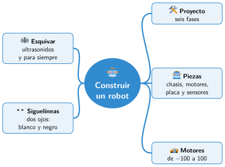

Bloque IV · Robótica aplicada
UD09 Construir y programar un robot
Sesiones
- Sesión 9.1 Las fases de un proyecto de robótica
- Sesión 9.2 Montamos el robot
- Sesión 9.3 Programamos los motores
- Sesión 9.4 Un robot que esquiva obstáculos
- Sesión 9.5 Un robot que sigue una línea
Al terminar la unidad
Mapa mental de la unidad

✏️ Repasa la unidad con el mapa: tapa una rama y explica en voz alta lo que pone.